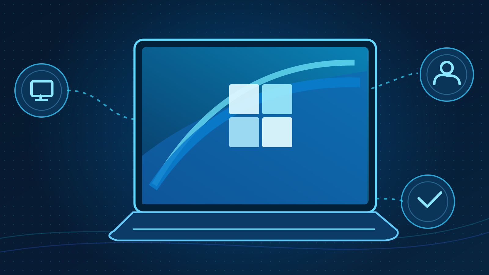
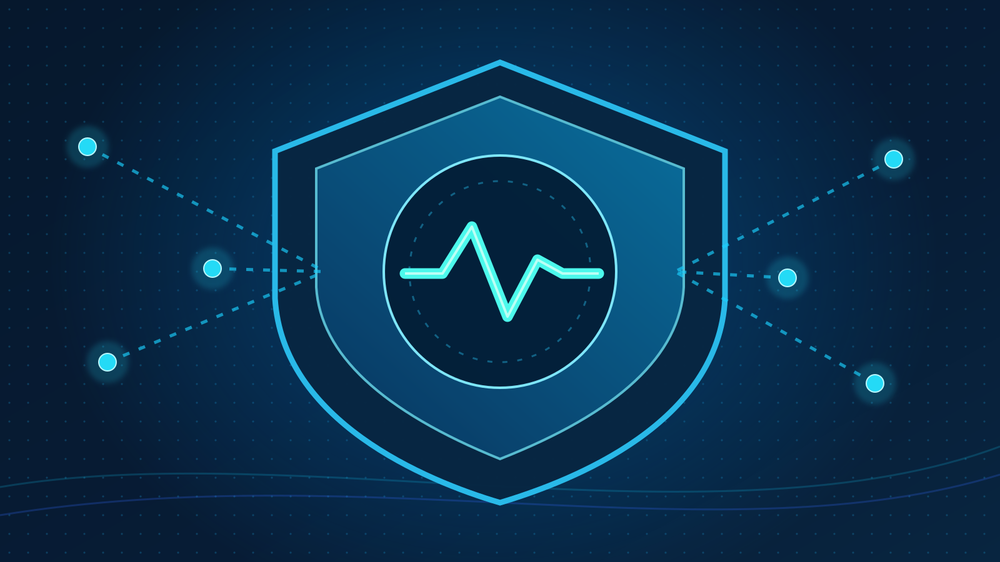

CTFCompleted
OhSINT Investigation
OSINT investigation of image metadata and information exposure.
7/7 TryHackMe questions with coaching; an SSID was not independently verified.
Open caseSearch published cases and filter by work type and outcome. Planned labs remain clearly labelled.
4 cases found
OSINT investigation of image metadata and information exposure.
7/7 TryHackMe questions with coaching; an SSID was not independently verified.
Open case
Simulated web-security challenge with offensive and defensive perspectives.
TryHackMe accepted the offensive lab result; defensive measures remain proposals.
Open case
Windows 11 enrollment, Entra join, Intune MDM and configuration checks.
Join, MDM and compliance reported by the learner; several policy conflicts remain unresolved and ESP completion has not been confirmed.
Open case
Proposed practical learning covering identity security, KQL and detections.
No implemented or independently validated detection case yet.
Open caseAdjust your search or filters. Unpublished Academy cases do not appear here.
This preview uses a reviewed public snapshot. It has no automated access to the private learning repository.